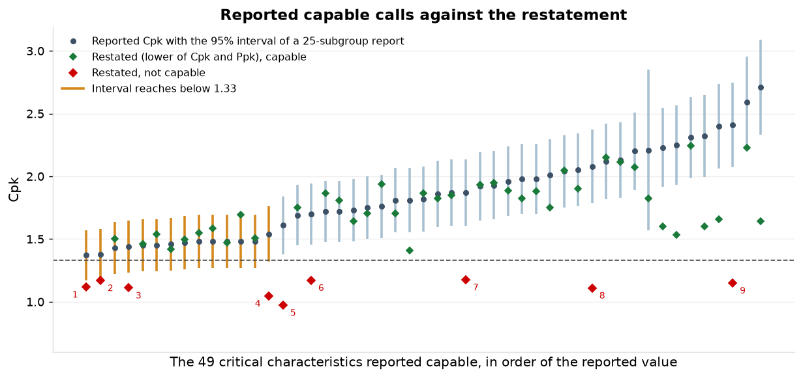
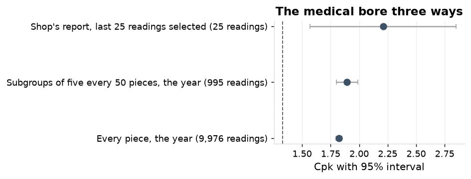
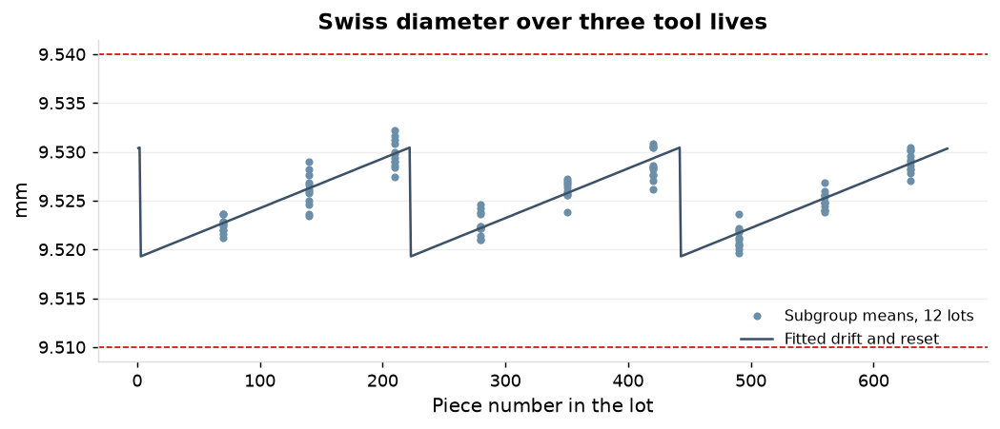
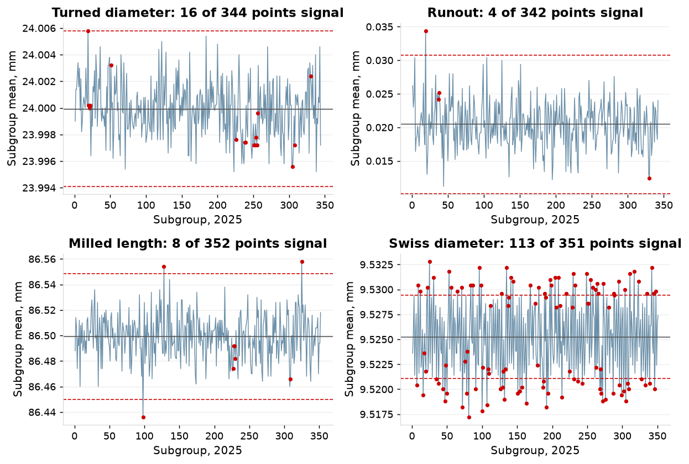
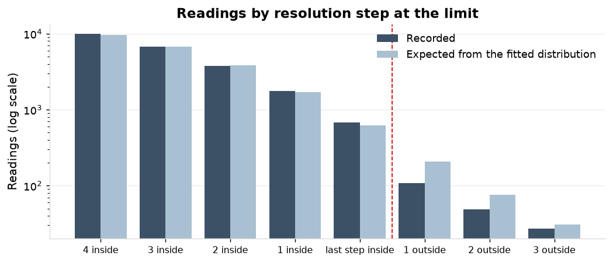

Of 49 critical characteristics the shop reports as capable, 9 are not capable on the 2025 record; of 5 reported marginal, 2 are capable. Of the 112 critical characteristics on SPC, 75 are capable, 26 marginal and 11 not capable. The nine: 3 drift within the tool life, 3 are bounded characteristics computed as normal, 1 shifts between subgroups, 1 a selection that leaves out subgroups, 1 the sampling interval alone.
| Reported, latest 2025 report | Restated capable | Restated marginal | Restated not capable | Total |
|---|---|---|---|---|
| capable | 40 | 8 | 1 | 49 |
| marginal | 2 | 3 | 0 | 5 |
| not capable | 0 | 2 | 1 | 3 |
| No. | Characteristic | Type | Reported Cpk | Restated Cpk | Restated Ppk | Method | Cause | Points signalling |
|---|---|---|---|---|---|---|---|---|
| 1 | C-11167-04 | diameter | 1.37 | 1.44 | 1.12 | pooled within, normal | drift | 16% |
| 2 | C-11930-12 | length | 1.38 | 1.18 | 1.17 | pooled within, normal | sampling | 0% |
| 3 | C-11163-06 | diameter | 1.44 | 1.59 | 1.11 | pooled within, normal | drift | 32% |
| 4 | C-12835-01 | diameter | 1.54 | 1.47 | 1.05 | pooled within, normal | selection | 31% |
| 5 | C-13317-14 | diameter | 1.61 | 1.30 | 0.97 | pooled within, normal | shifts | 33% |
| 6 | C-11173-11 | diameter | 1.70 | 1.69 | 1.17 | pooled within, normal | drift | 42% |
| 7 | C-12828-17 | true position | 1.87 | 1.18 | 1.18 | percentile (lognormal) | bounded | 2% |
| 8 | C-13307-06 | flatness | 2.08 | 1.11 | 1.11 | percentile (lognormal) | bounded | 2% |
| 9 | C-13357-02 | flatness | 2.41 | 1.15 | 1.15 | percentile (lognormal) | bounded | 0% |
A Cpk from 25 subgroups carries a 95% interval of 0.20 to 0.38 either side on the reported capable calls. 14 of the 49 capable calls have a reported value within that interval of 1.33.

The medical bore gives Cpk 2.21 on the shop's 25 readings, 1.89 on the year's subgroups and 1.82 on every piece. The 25-reading interval runs from 1.57 to 2.85; every piece gives 1.80 to 1.85. The record holds 9,976 readings for 10,000 pieces made.
| Basis | Readings | Cpk (95% interval) | Ppk |
|---|---|---|---|
| Shop's report, last 25 readings selected, 2025-12-23 | 25 | 2.21 (1.57 to 2.85) | 2.34 |
| Subgroups of five every 50 pieces, the year | 995 | 1.89 (1.80 to 1.99) | 1.91 |
| Every piece, the year | 9,976 | 1.82 (1.80 to 1.85) | 1.83 |

The turned diameter is stable and capable: Cpk 1.52 (1.47 to 1.58) and Ppk 1.50 on 344 subgroups, against 1.43 on the shop's latest report. 16 of 344 points signal a rule.
| Characteristic | LSL | USL | Sample N | Sample mean | StDev (Within) | StDev (Overall) | Cp | Cpk (95%) | Pp | Ppk (95%) | PPM within | PPM overall | Reported Cpk |
|---|---|---|---|---|---|---|---|---|---|---|---|---|---|
| Turned diameter, C-14103-05 | 23.980 | 24.020 | 1,720 | 23.9999 | 0.00435 | 0.00442 | 1.53 | 1.52 (1.47 to 1.58) | 1.51 | 1.50 (1.45 to 1.55) | 4 | 6 | 1.43 |
| Runout, C-14108-14 | 0.050 | 1,710 | 0.0205 | 0.00770 | 0.00773 | 1.28 (1.23 to 1.33) | 1.27 (1.23 to 1.32) | 62 | 66 | 0.87 | |||
| Milled length, C-11909-01 | 86.400 | 86.600 | 1,760 | 86.4991 | 0.03667 | 0.03725 | 0.91 | 0.90 (0.86 to 0.94) | 0.89 | 0.89 (0.85 to 0.92) | 6,401 | 7,274 | 0.83 |
| Swiss diameter, C-11163-06 | 9.510 | 9.540 | 1,755 | 9.5252 | 0.00310 | 0.00443 | 1.61 | 1.59 (1.52 to 1.65) | 1.13 | 1.11 (1.06 to 1.16) | 1 | 722 | 1.44 |
| Medical bore, C-17004-05 | 6.335 | 6.365 | 9,976 | 6.3502 | 0.00270 | 0.00270 | 1.85 | 1.82 (1.80 to 1.85) | 1.85 | 1.83 (1.80 to 1.85) | 0 | 0 | 2.21 |
The shop reports the runout at 0.87; it is 1.27 (1.22 to 1.31) by the percentile method on the fitted folded normal. The module's figure comes from zero entered as the lower limit in the master: the lower side then governs at the mean over three sd. The distribution is barely skewed (0.03), so the normal calculation against the upper limit alone agrees at 1.27; Box-Cox gives 1.22.
| Calculation | Index |
|---|---|
| Shop's latest report (module, 25 subgroups) | 0.87 |
| Module's calculation on all 2025 subgroups, limits as in the master (0 to 0.050) | 0.88 |
| Normal calculation against the upper limit only | 1.27 |
| Percentile method on the fitted folded normal (95% interval) | 1.27 (1.22 to 1.31) |
| Box-Cox, lambda 0.92 | 1.22 |
The milled length is stable and not capable: Cpk 0.90 (0.86 to 0.94), centred, with 8 of 352 points signalling. The process holds 0.30 mm at 1.33 and 0.37 mm at 1.67 against the drawing's 0.20 mm. 6 of the 12 NCRs on the part cite the length; they carry 131 of the part's 198 booked rework hours and 0 of its 191 sorting hours.
The Swiss diameter is 1.59 within subgroups and 1.11 overall. It drifts 0.0051 mm per 100 pieces and resets every 220 pieces, 3.6 within sd over a tool life; 113 of 351 points signal. A tool change at 110 pieces gives Ppk 1.43; 140 pieces is the longest interval that holds 1.33.

The six F-21 bores on the two-point bore gauge show 41 to 57% of points signalling and Ppk 0.5 to 0.6 below Cpk; the other capable characteristics have a median of 2% signalling. With the operator effects of S1 removed from the readings, signalling falls to 11 to 35% and Ppk rises from 1.41 to 1.66 as recorded to 1.81 to 2.09, against Cpk of 1.94 to 2.27. The operators account for most of the instability on these bores, not all of it.
| Bore | Subgroups | Points signalling: as recorded | net of operators | Cpk: as recorded | net | Ppk (95%): as recorded | net |
|---|---|---|---|---|---|---|---|
| C-14918-14 | 185 | 41% | 22% | 2.24 | 2.27 | 1.66 (1.57 to 1.76) | 2.09 (2.00 to 2.18) |
| C-14928-12 | 209 | 57% | 12% | 1.91 | 1.94 | 1.41 (1.34 to 1.49) | 1.81 (1.73 to 1.92) |
| C-14952-04 | 206 | 43% | 11% | 2.08 | 2.09 | 1.53 (1.45 to 1.62) | 1.96 (1.87 to 2.06) |
| C-14966-17 | 198 | 51% | 17% | 2.20 | 2.20 | 1.64 (1.55 to 1.72) | 2.00 (1.90 to 2.11) |
| C-14989-04 | 192 | 46% | 35% | 2.18 | 2.17 | 1.60 (1.52 to 1.71) | 1.83 (1.75 to 1.93) |
| C-14992-08 | 207 | 46% | 16% | 2.21 | 2.19 | 1.60 (1.52 to 1.69) | 1.98 (1.89 to 2.09) |
The module raised an alarm on 3,016 of 65,803 five-reading subgroups in 2025 (4.6%), on rules 1 and 2 against the limits in the master. 1,255 were acknowledged "checked ok" (42%), 655 with no text and 226 not at all. On the study characteristics the rules find what the module raises and more: rules 3 and 4 are not raised.
| Characteristic | Points | Rule 1 | Rule 2 | Rule 3 | Rule 4 | Signalling any rule | Module alarms raised | Acknowledged |
|---|---|---|---|---|---|---|---|---|
| Turned diameter | 344 | 1 | 1 | 9 | 8 | 16 (4.7%) | 1 | 1 |
| Runout | 342 | 1 | 1 | 2 | 0 | 4 (1.2%) | 1 | 1 |
| Milled length | 352 | 3 | 1 | 1 | 3 | 8 (2.3%) | 3 | 3 |
| Swiss diameter | 351 | 87 | 36 | 19 | 0 | 113 (32.2%) | 103 | 95 |
| Medical bore | 9976 | 32 | 20 | 66 | 62 | 171 (1.7%) | 33 | 31 |

On the 139 hand-gauge characteristics with an index below 1.0, 730 readings sit in the last resolution step inside a limit against 658 expected, and 166 in the two steps outside against 302. Readings are used as recorded in every calculation of this study.
| Index of the characteristic | Characteristics | Readings | Last step inside: recorded | expected | Two steps outside: recorded | expected |
|---|---|---|---|---|---|---|
| index below 1.0 | 139 | 77,495 | 730 | 658 | 166 | 302 |
| 1.0 to 1.33 | 376 | 216,560 | 209 | 190 | 32 | 51 |
| 1.33 and above | 531 | 303,355 | 12 | 12 | 1 | 1 |

Capability: AIAG SPC 2nd edition. Cp and Cpk from the pooled within-subgroup sd (mean moving range over 1.128 where every piece is measured); Pp and Ppk from the sd of all readings; all 2025 subgroups. Cpk interval by Bissell's approximation with the degrees of freedom of the sigma estimate; Ppk and percentile-index intervals by bootstrap over subgroups (1,000 and 500 resamples). Bounded characteristics (runout, flatness, position, Ra): folded normal, lognormal and Weibull fitted to the readings, the best by Anderson-Darling, index from the 50th and 99.865th percentiles against the upper limit; Box-Cox beside. Restated category: the lower of Cpk and Ppk at or above 1.33 capable, from 1.0 marginal. Stability: Western Electric rules 1 to 4 on subgroup means with centre and sigma from the year's data. Sampling interval of a report: Bissell's interval at 125 readings and 100 degrees of freedom (25 readings and 24 for the medical bore). Medical bore subgroups: five consecutive pieces every 50 pieces of each lot, a construction from the every-piece record. F-21 bores net of operators: each reading less the machinist's effect from the mixed model of S1. Flinching: expected counts from the distribution fitted to each characteristic (normal; folded normal for runout and flatness) in the last resolution step inside each limit and the two steps outside; digit preference is not modelled. Readings are used as recorded.
| Characteristic | Type | Reported Cpk | Half-width | Reported | Within interval of 1.33 | Restated Cpk | Restated Ppk | Method | Restated | Subgroups | Signalling |
|---|---|---|---|---|---|---|---|---|---|---|---|
| C-11909-01 | length | 0.83 | 0.13 | not capable | 0.90 | 0.89 | pooled within, normal | not capable | 352 | 2% | |
| C-14108-14 | runout | 0.87 | 0.13 | not capable | 1.27 | 1.27 | percentile (folded normal) | marginal | 342 | 1% | |
| C-11920-12 | length | 0.98 | 0.15 | not capable | 1.19 | 1.16 | pooled within, normal | marginal | 132 | 5% | |
| C-14117-10 | runout | 1.04 | 0.16 | marginal | 1.59 | 1.59 | percentile (folded normal) | capable | 148 | 2% | |
| C-11226-03 | diameter | 1.20 | 0.18 | marginal | 1.24 | 1.21 | pooled within, normal | marginal | 172 | 5% | |
| C-11923-04 | length | 1.24 | 0.18 | marginal | 1.16 | 1.13 | pooled within, normal | marginal | 165 | 4% | |
| C-14134-23 | runout | 1.24 | 0.18 | marginal | 1.62 | 1.62 | percentile (folded normal) | capable | 140 | 1% | |
| C-11201-16 | diameter | 1.29 | 0.19 | marginal | 1.22 | 1.18 | pooled within, normal | marginal | 135 | 1% | |
| C-11167-04 | diameter | 1.37 | 0.20 | capable | yes | 1.44 | 1.12 | pooled within, normal | marginal | 70 | 16% |
| C-11930-12 | length | 1.38 | 0.20 | capable | yes | 1.18 | 1.17 | pooled within, normal | marginal | 93 | 0% |
| C-14103-05 | diameter | 1.43 | 0.21 | capable | yes | 1.52 | 1.50 | pooled within, normal | capable | 344 | 5% |
| C-11163-06 | diameter | 1.44 | 0.21 | capable | yes | 1.59 | 1.11 | pooled within, normal | marginal | 351 | 32% |
| C-11962-08 | length | 1.45 | 0.21 | capable | yes | 1.48 | 1.46 | pooled within, normal | capable | 70 | 3% |
| C-14140-03 | diameter | 1.45 | 0.21 | capable | yes | 1.56 | 1.54 | pooled within, normal | capable | 145 | 6% |
| C-13321-18 | diameter | 1.46 | 0.21 | capable | yes | 1.42 | 1.42 | pooled within, normal | capable | 140 | 0% |
| C-11265-10 | diameter | 1.47 | 0.21 | capable | yes | 1.50 | 1.50 | pooled within, normal | capable | 154 | 3% |
| C-11253-11 | diameter | 1.48 | 0.21 | capable | yes | 1.58 | 1.55 | pooled within, normal | capable | 141 | 2% |
| C-11950-01 | length | 1.48 | 0.21 | capable | yes | 1.65 | 1.59 | pooled within, normal | capable | 144 | 3% |
| C-12861-09 | diameter | 1.48 | 0.21 | capable | yes | 1.49 | 1.47 | pooled within, normal | capable | 174 | 1% |
| C-13403-09 | diameter | 1.48 | 0.21 | capable | yes | 1.73 | 1.69 | pooled within, normal | capable | 114 | 3% |
| C-14159-01 | diameter | 1.48 | 0.21 | capable | yes | 1.59 | 1.51 | pooled within, normal | capable | 62 | 8% |
| C-12835-01 | diameter | 1.54 | 0.22 | capable | yes | 1.47 | 1.05 | pooled within, normal | marginal | 115 | 31% |
| C-13317-14 | diameter | 1.61 | 0.23 | capable | 1.30 | 0.97 | pooled within, normal | not capable | 112 | 33% | |
| C-12016-08 | length | 1.69 | 0.24 | capable | 1.79 | 1.75 | pooled within, normal | capable | 144 | 2% | |
| C-11173-11 | diameter | 1.70 | 0.24 | capable | 1.69 | 1.17 | pooled within, normal | marginal | 96 | 42% | |
| C-13328-14 | diameter | 1.72 | 0.25 | capable | 1.87 | 1.86 | pooled within, normal | capable | 132 | 5% | |
| C-14212-17 | diameter | 1.72 | 0.25 | capable | 1.91 | 1.81 | pooled within, normal | capable | 143 | 10% | |
| C-13369-01 | diameter | 1.73 | 0.25 | capable | 1.68 | 1.64 | pooled within, normal | capable | 78 | 0% | |
| C-11320-01 | diameter | 1.75 | 0.25 | capable | 1.74 | 1.70 | pooled within, normal | capable | 143 | 3% | |
| C-14196-28 | diameter | 1.76 | 0.25 | capable | 1.94 | 1.94 | pooled within, normal | capable | 157 | 3% | |
| C-11282-06 | diameter | 1.81 | 0.26 | capable | 1.74 | 1.71 | pooled within, normal | capable | 137 | 2% | |
| C-14928-12 | bore | 1.81 | 0.26 | capable | 1.91 | 1.41 | pooled within, normal | capable | 209 | 57% | |
| C-14168-10 | diameter | 1.82 | 0.26 | capable | 1.89 | 1.86 | pooled within, normal | capable | 142 | 5% | |
| C-12925-01 | diameter | 1.86 | 0.26 | capable | 1.83 | 1.85 | pooled within, normal | capable | 70 | 1% | |
| C-11301-04 | diameter | 1.87 | 0.27 | capable | 2.01 | 1.85 | pooled within, normal | capable | 151 | 21% | |
| C-12828-17 | true position | 1.87 | 0.27 | capable | 1.18 | 1.18 | percentile (lognormal) | marginal | 176 | 2% | |
| C-13380-09 | diameter | 1.92 | 0.27 | capable | 2.00 | 1.93 | pooled within, normal | capable | 87 | 5% | |
| C-12023-05 | length | 1.93 | 0.27 | capable | 2.05 | 1.95 | pooled within, normal | capable | 147 | 5% | |
| C-11984-02 | length | 1.96 | 0.28 | capable | 1.89 | 1.89 | pooled within, normal | capable | 68 | 0% | |
| C-12884-18 | diameter | 1.98 | 0.28 | capable | 1.89 | 1.82 | pooled within, normal | capable | 60 | 0% | |
| C-13350-04 | diameter | 1.98 | 0.28 | capable | 1.90 | 1.88 | pooled within, normal | capable | 125 | 0% | |
| C-12947-12 | diameter | 2.01 | 0.28 | capable | 1.90 | 1.75 | pooled within, normal | capable | 88 | 8% | |
| C-14175-03 | diameter | 2.04 | 0.29 | capable | 2.14 | 2.05 | pooled within, normal | capable | 130 | 7% | |
| C-11347-08 | diameter | 2.05 | 0.29 | capable | 1.94 | 1.90 | pooled within, normal | capable | 135 | 1% | |
| C-13307-06 | flatness | 2.08 | 0.29 | capable | 1.11 | 1.11 | percentile (lognormal) | marginal | 125 | 2% | |
| C-12907-02 | diameter | 2.12 | 0.30 | capable | 2.15 | 2.15 | pooled within, normal | capable | 62 | 0% | |
| C-12868-03 | diameter | 2.13 | 0.30 | capable | 2.16 | 2.11 | pooled within, normal | capable | 131 | 1% | |
| C-11329-04 | diameter | 2.20 | 0.31 | capable | 2.10 | 2.07 | pooled within, normal | capable | 155 | 2% | |
| C-17004-05 | bore | 2.21 | 0.64 | capable | 1.82 | 1.83 | individuals, normal | capable | 9976 | 2% | |
| C-14992-08 | bore | 2.23 | 0.31 | capable | 2.21 | 1.60 | pooled within, normal | capable | 207 | 46% | |
| C-14952-04 | bore | 2.25 | 0.32 | capable | 2.08 | 1.53 | pooled within, normal | capable | 206 | 43% | |
| C-12878-19 | diameter | 2.31 | 0.33 | capable | 2.32 | 2.24 | pooled within, normal | capable | 60 | 3% | |
| C-14989-04 | bore | 2.32 | 0.33 | capable | 2.18 | 1.60 | pooled within, normal | capable | 192 | 46% | |
| C-14918-14 | bore | 2.40 | 0.34 | capable | 2.24 | 1.66 | pooled within, normal | capable | 185 | 41% | |
| C-13357-02 | flatness | 2.41 | 0.34 | capable | 1.15 | 1.15 | percentile (lognormal) | marginal | 89 | 0% | |
| C-12004-08 | length | 2.59 | 0.36 | capable | 2.28 | 2.23 | pooled within, normal | capable | 127 | 9% | |
| C-14966-17 | bore | 2.71 | 0.38 | capable | 2.20 | 1.64 | pooled within, normal | capable | 198 | 51% |
| Characteristic | Lots | Points | Rule 1 | Rule 2 | Rule 3 | Rule 4 | Any rule | Range chart out | Module rule 1; rule 2 | Acknowledged | Any rule, 2024 |
|---|---|---|---|---|---|---|---|---|---|---|---|
| turned diameter, C-14103-05 | 12 | 344 | 1 | 1 | 9 | 8 | 16 (4.7%) | 0 | 0; 1 | 1 | 20 (6.0%) |
| runout, C-14108-14 | 12 | 342 | 1 | 1 | 2 | 0 | 4 (1.2%) | 0 | 1; 0 | 1 | 11 (3.1%) |
| milled length, C-11909-01 | 12 | 352 | 3 | 1 | 1 | 3 | 8 (2.3%) | 2 | 3; 0 | 3 | 5 (1.4%) |
| Swiss diameter, C-11163-06 | 12 | 351 | 87 | 36 | 19 | 0 | 113 (32.2%) | 0 | 89; 24 | 95 | 124 (36.3%) |
| medical bore, C-17004-05 | 10 | 9976 | 32 | 20 | 66 | 62 | 171 (1.7%) | 98 | 18; 15 | 31 | 176 (1.8%) |
| Cited | Disposition | NCRs | Rework hours booked | Sorting hours |
|---|---|---|---|---|
| the length | rework | 4 | 130.9 | 0.0 |
| the length | scrap | 1 | 0.0 | 0.0 |
| the length | use as is | 1 | 0.0 | 0.0 |
| a bore | rework | 1 | 66.7 | 0.0 |
| a bore | scrap | 2 | 0.0 | 0.0 |
| a bore | sort | 2 | 0.0 | 96.7 |
| cosmetic | sort | 1 | 0.0 | 94.2 |
| Value | |
|---|---|
| Drift slope, mm per piece (95% interval) | 0.0000509 (0.0000486 to 0.0000532) |
| Reset interval, pieces (R-sq of the fit) | 220 (0.84) |
| Tool change notes; median pieces between notes | 101; 210 |
| Drift over a tool life, mm | 0.0112 |
| Offset at reset against nominal, mm | -0.0057 |
| Ppk at the present interval, from the fit | 1.12 |
| Ppk at 110 pieces | 1.43 |
| Longest interval with Ppk at or above 1.33, pieces | 140 |
| Gauge type | Characteristics | Readings | Last step inside: recorded | expected | Two steps outside: recorded | expected |
|---|---|---|---|---|---|---|
| bore gauge | 200 | 115,280 | 465 | 438 | 61 | 121 |
| caliper | 248 | 139,000 | 337 | 292 | 68 | 128 |
| dial indicator | 156 | 102,480 | 22 | 10 | 4 | 10 |
| micrometer | 442 | 240,650 | 127 | 120 | 66 | 95 |
| All hand gauges | 1046 | 597,410 | 951 | 860 | 199 | 354 |
| Distribution | Anderson-Darling | 0.135th percentile | Median | 99.865th percentile |
|---|---|---|---|---|
| folded normal | 2.83 | 0.0004 | 0.0204 | 0.0437 |
| Weibull | 3.94 | 0.0023 | 0.0201 | 0.0443 |
| lognormal | 49.48 | 0.0039 | 0.0185 | 0.0873 |